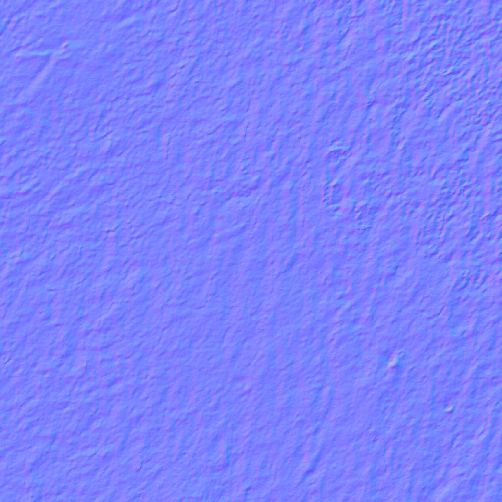
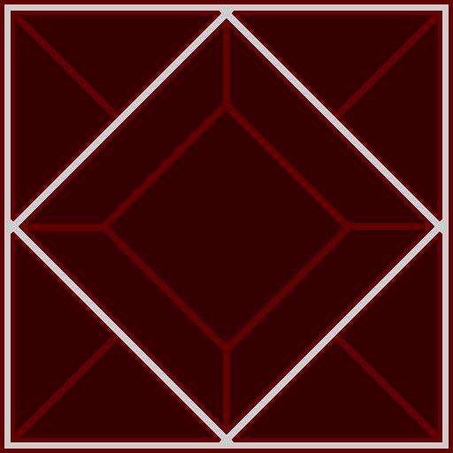
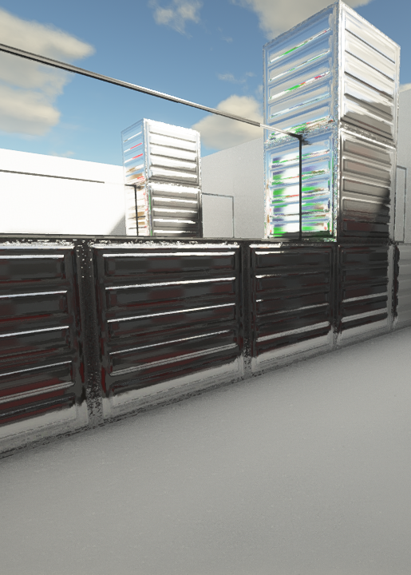
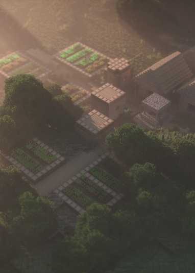

we introduce our Resourcepack titled Arthenal Photorealistic PBR and POM textures. with a resolution of 256x 1024x. we will continue the generation of Ray Tracing Texture generation. and the texture is more apparent with Physical Based Rendering (PBR) and Bump-Mapping and Parallax (POM) Textures. Especially for Java Edition and also pocket edition. Norman, creator of the Arthenal company that created the photorealistic Resource Package to become the successor to the Ray Tracing generation
we are sorry, if the texture that you use is not too realistic and not real. if necessary, you can wait for us until Arthenal is sold on patreon or on other sites that make it easy for you to pay. it's also possible Arthenal will stop for a moment after I finish learning coding. we are actually still designing it but we are still busy with our business, so sorry, we may delay Arthenal until the next year.
Actually Arthenal doesn't only make for the Java edition, but there is also a pocket edition, but we have a pocket edition problem. the problem is because the bedrock edition does not have PBR and POM, we are sorry we did it deliberately because if the bedrock edition does not appear PBR and POM, if added it is useless. just enlarge the size and make your mobile and PC will fill the storage memory, usually it happens on Android users who have little memory.
 Normal map, or often also called POM / Bump Map. The picture on the left is the Normal map that we use to make concrete look like a bump map. Although we don't understand exactly what are Normals and Bump Maps, we can make them using Materialize from Bounding Box Software that can create any map property. like Height map, Normal, Specular / Metalic, Smooth, Edge, AO.
at first it was taken from the original photo, because the shading made the block texture separate, so we made the Normal map, and it was successfully created. in my opinion Normal map aims to make the material / texture look like 3D, with a little metallic in the mapping. Normal map is also not only in Minecraft in some applications, games, and 3D files also exist
 Specular Map, or also often called PBR. The picture to the left is the Specular texture for Glass. drawn there are 2 specular colors, namely GrayScale and also Red. each specular map must have a different color. Gray Scale when shaders are used, the light reflection will be high, like iron. RGB is more different than GrayScale, the reflection effect is less than the GrayScale, whereas all GrayScale and RGB colors are the same Brightness, more info search on Google
We make Normal and Specular using only 1 application, namely Materialize from Bounding box software. you can actually use the blender and crazy bump application to make it, but I also don't know about crazy bump. in the Materialize of Bounding Box Software there are 6 Propertymaps, including Specular. You can also use the Metalic map and Smoothes map to make specular, if you want RGB, you just change the color of the property map on the right side of the image format.
 SEUS PTGI is the most famous Ray Tracing shader including such as Continuum, SEUS PTGI is a shader made by Sonic Ether, because Path-Traced Render and also Global Illumination with coding by the legendary Sonic Ether are often called Ray Tracing shaders or also a replacement for the RTX Update first for Minecraft Win10
 not only SEUS PTGI from Sonic Ether, though not very legendary, but Continuum also includes our flagship Ray Tracing shader. but we also have to make a Specular Specifically for Continuum 2.1 after Release, and also we will make it for the next Continuum. so we will release it sometime later after Continuum 2.1 is officially released by Continuum
CopyRight © 2020 Norman Andrians, All Rights Reserved
Minecraft is a trademark of the Mojang company from Sweden. all are not sponsored